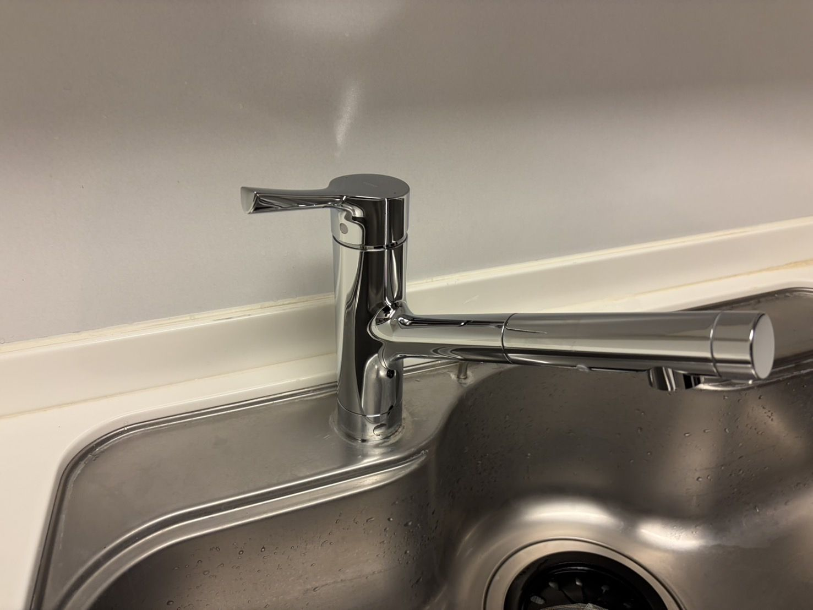
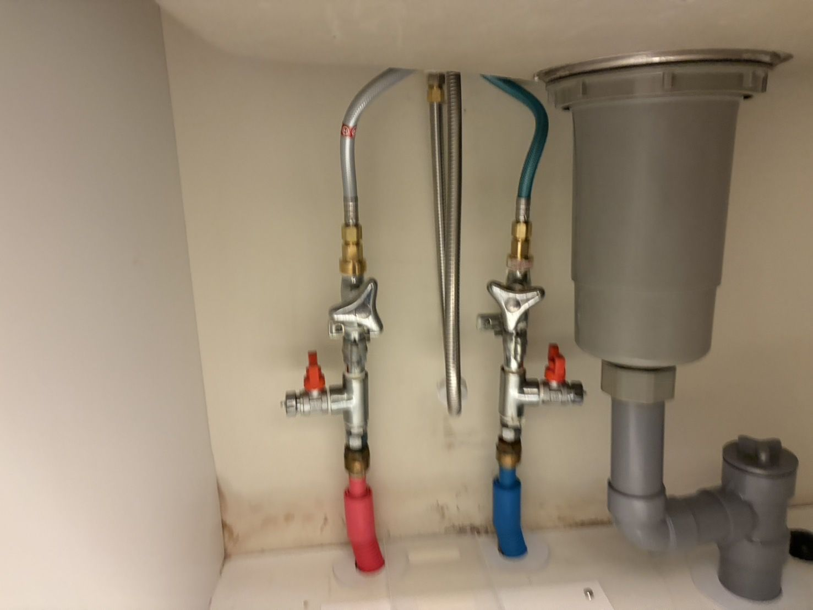
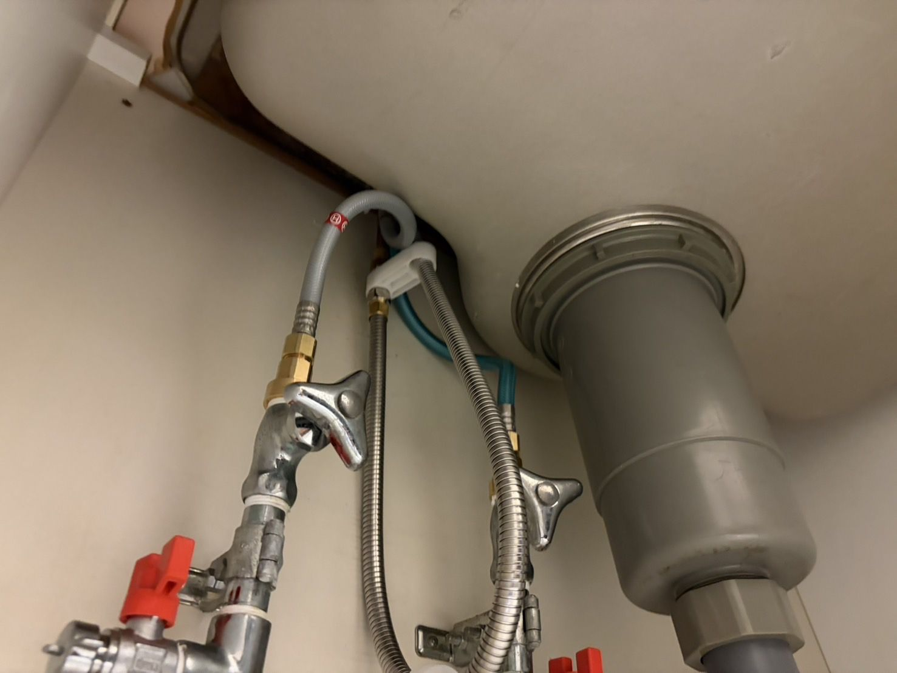
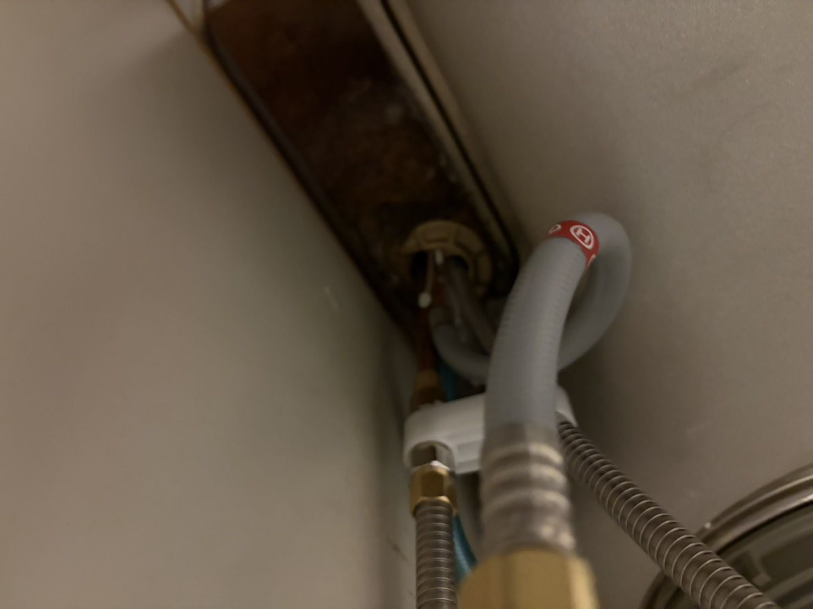
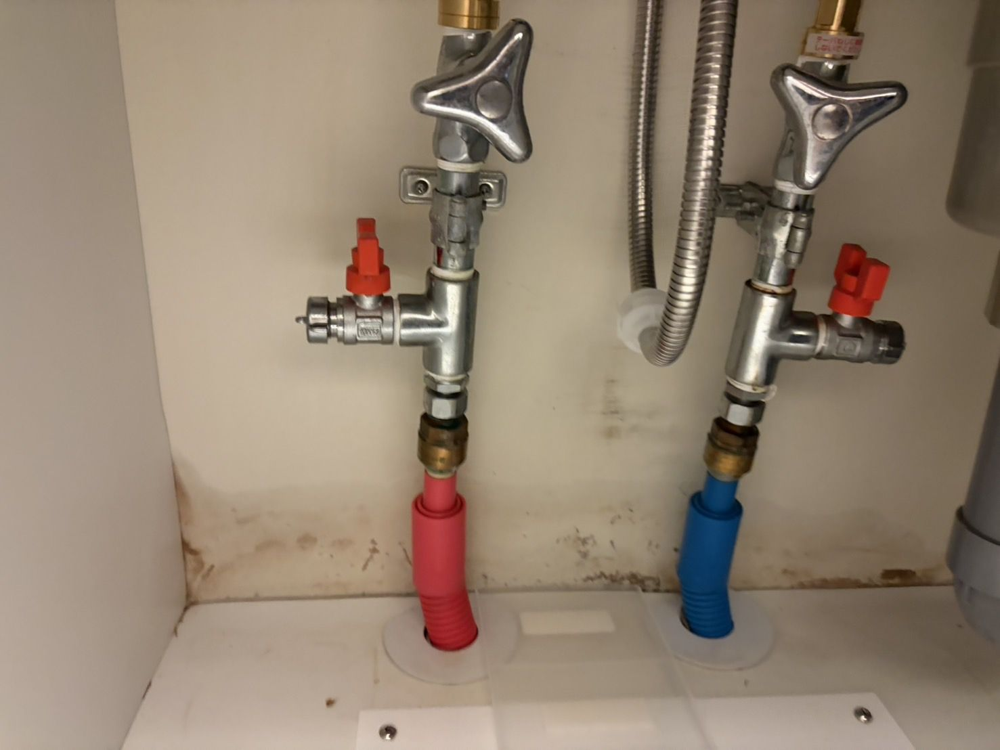

工事実績 / 台所の水栓交換
使いにくくなっていた台所の水栓を交換しました
こんにちは、滝沢の御用聞きです。今回は、台所の水栓（蛇口）を交換した現場をご紹介します。新しい水栓の仕入れから取り外し・取り付けまで、滝沢が担当しました。
交換のきっかけ：使いにくさ・不具合
ご相談の内容は、台所の水栓が使いにくい、不具合があるというものでした。水栓を新しいものに交換しました。
交換後：シンクの水栓

交換後：シンク下の配管




担当した範囲
- 水栓の仕入れ：滝沢
- 既存の水栓の取り外しと、新しい水栓の取り付け：滝沢
台所の水栓のこと、ご相談ください
レバーが使いにくい、調子が悪いというときは、水栓全体とシンク下の配管の写真を送っていただくと、お話が進めやすくなります。撮れる範囲で大丈夫です。
行徳・妙典周辺の住まいの困りごとを、滝沢の御用聞きが伺います。LINE写真相談は0円です。対応内容を確認し、作業前に金額をご案内します。料金目安もご覧いただけます。